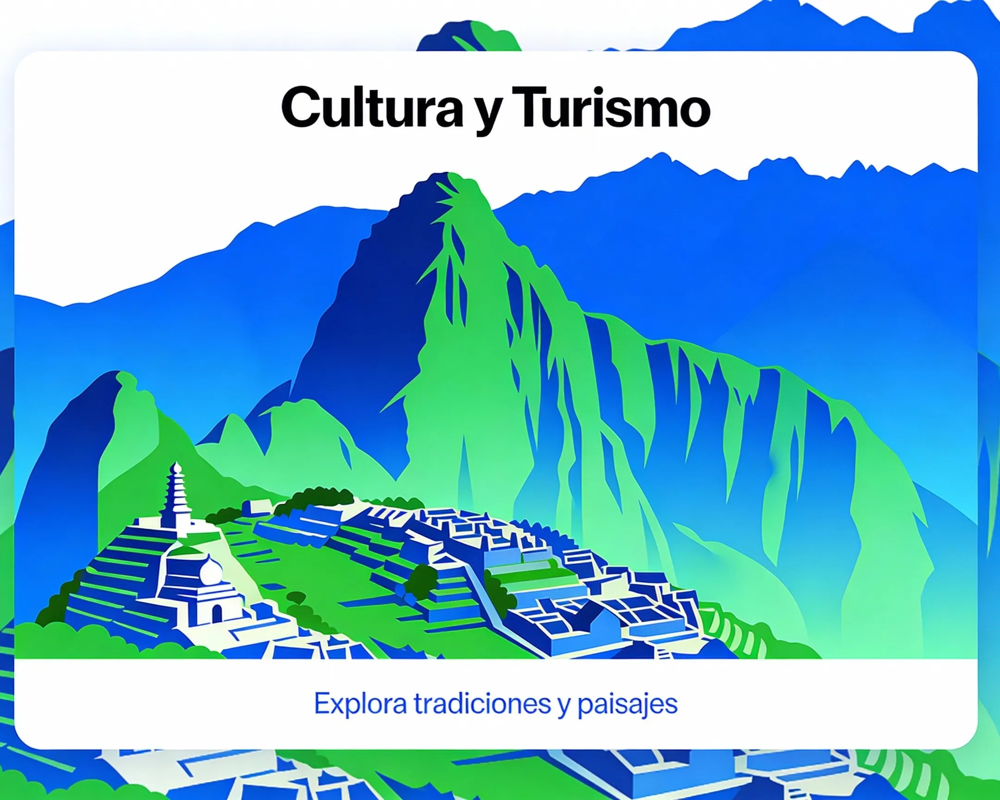
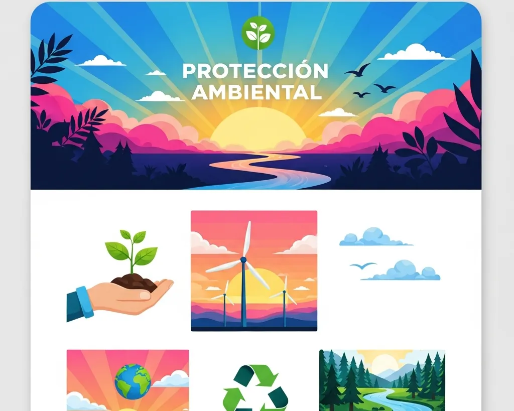
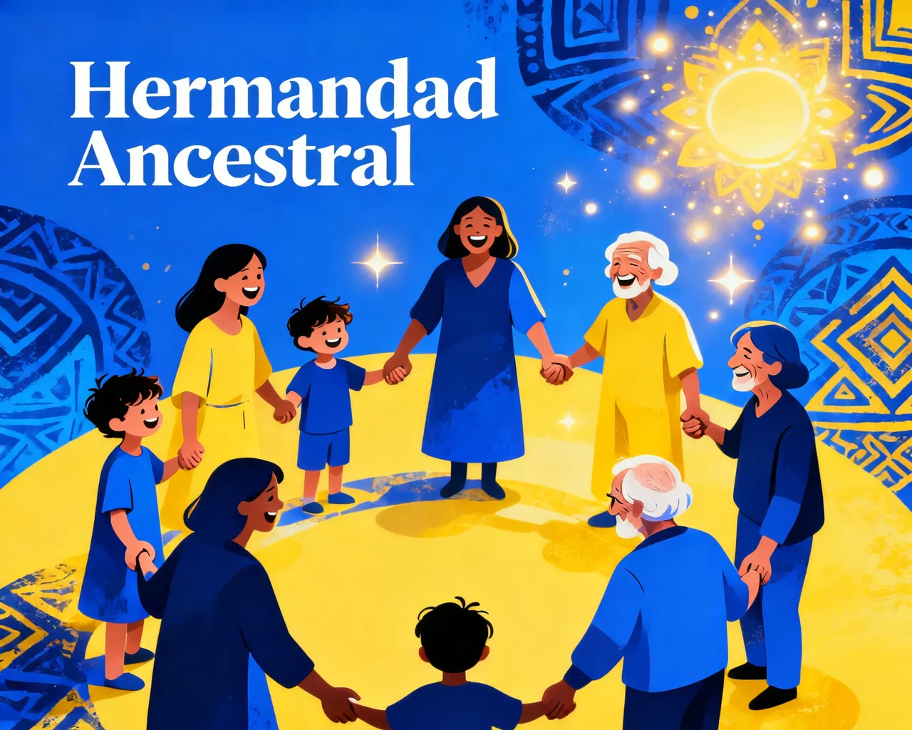
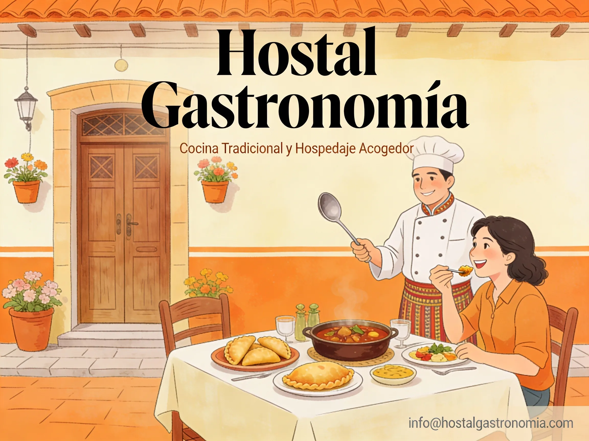
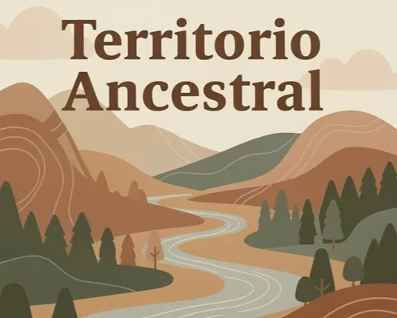

Estructura de los Componentes

1. Cultura y Turismo
Exploración de la naturaleza de la consciencia humana y su relación con nuestra existencia en el mundo moderno.

2. Protección ambiental
Análisis de los principios éticos en la sociedad contemporánea y nuestra responsabilidad colectiva.

3. Inclusión Social
Estudio sobre la iniciativa personal que aporta al desarrollo desde el potencial del ser humano.

4. Hermandad Ancestral
Revalorización del conocimiento tradicional y su aplicación a los desafíos actuales de la humanidad.
5. Emprendimientos Sociales
Reflexiones sobre la búsqueda de equilibrio entre progreso tecnológico y bienestar humano.

6. Agro Industria
Convergencia cultural que se expresa en el comercio como puerta a la libertad financiera.

7. Hostal Gastrónomía
Integración entre la cultura ancestral y la gastronomía contemporánea enfocada al turismo responsable.

8. Territorio Ancestral
El libro abierto en blanco para escribir la historia de los proyectos emergentes.